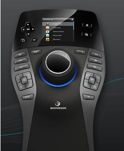
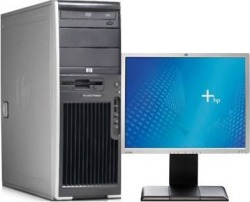
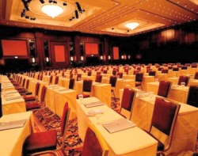
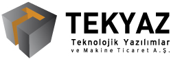

SolidWorks Toplantýsý'na son 11 gün!..
Tarih: 14 Kasým 2009
Yer: Grand Cevahir Otel
SolidWorks Yazýlýmýný Kullananlar TEKYAZ Seminerinde buluþuyor…
14 Kasým 2009 Cumartesi günü Grand Cevahir Otel'de SolidWorks kullanýcýlarý ve meraklýlarý bir araya geliyor. Türkçe ara yüzü ile ilk defa karþýlacak olan seminer katýlýmcýlarý SolidWorks 2010'u yakýndan dinleyebilecekler.
Seminerimizde neler var?
* SolidWorks 2010 Yeniliklerini Yakýndan Ýnceleme ve Uzmanlarýndan Dinleme Fýrsatý… Üstelik SolidWorks 2010 Artýk TÜRKÇE!
* 130'dan fazla 3D Yazýlýmý destekleyen, Üstün MCAD Navigasyon, üst düzey konfor saðlayan, renkli LCD Ekran ve Akýllý fonksiyon tuþlarý ile Space Pilot Pro'lar, 3D Connection'lar sizleri bekliyor… Yakýndan incelemek ve kazanmak istemez misiniz?

* Seminer katýlýmcýlarý HP WorkStation (iþ istasyonlarý) hem yakýndan inceleyebilecek hem de özel fiyat ve fýrsatlarý yakalayabilecek…

* Ücretsiz Yenilikler DVD'niz… TEKYAZ uzman ve deneyimli kadrosu tarafýndan hazýrlanan SolidWorks 2010 yenilikler DVD'si teslim edilecektir.
* Seminer Katýlýmcýlara özel Versiyon Geçiþ Kampanyalarý
* Tüm katýlýmcýlara saðlanacak sürpriz hediyeler...
Seminere yoðun ilgi!..
Seminer bilet satýþlarý baþladýðýndan itibaren yoðun bir ilgi gören lansmanda biletler hýzla tükeniyor… Biletini þimdiden al, bu fýrsatý kaçýrma!
Avrupa'nýn en büyük balo salonundayýz…
5 yýldýzlý teknolojiyi 5 yýldýzlý konforla buluþturan ve Avrupa'nýn en büyük Balo Salonuna sahip Grand Cevahir Otel'de hem SolidWorks 2010 yeniliklerini dinleyebilecek, hem de otelin leziz mutfaðýnýn sunmuþ olduðu ikramlar tadabileceksiniz…

Teknolojik Yazýlýmlar ve Makina Tic. A.Þ.
Büyükdere Cad.,
Stad Han No:85 Kat:6
Mecidiyeköy Ýstanbul
Tel: (212) 217 40 84
www.tekyaz.com |
 |
Teknolojik Yazýlýmlar, bir Umtaþ A.Þ. kuruluþudur. |